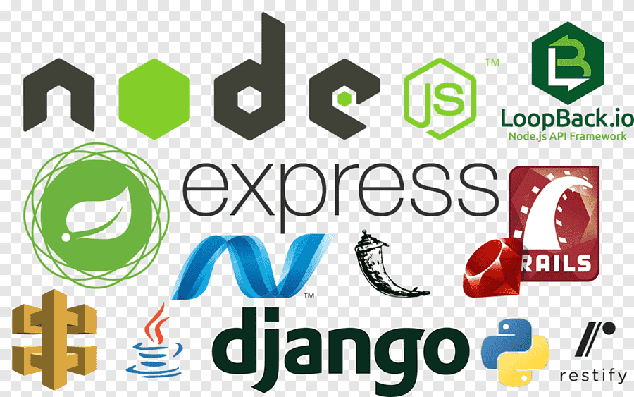

Understanding Web Framework 
Posted by Neil Patrick Java Veñegas
What is Web Framework?
A web framework or web application framework is a software framework that is designed to support the development of web applications including web services, web resources, and web APIs. Web frameworks provide a standard way to build and deploy web applications on the World Wide Web. Web frameworks aim to automate the overhead associated with common activities performed in web development. For example, many web frameworks provide libraries for database access, templating frameworks, and session management, and they often promote code reuse.[
A web framework often referred to as a web application framework is a pre-built set of libraries, software tools, and best practices that support the overall software development of web apps.
- It handle multiple routine tasks and proffer a structured way to organize code, making development more maintainable and efficient.
- It eases the web development procedure and, hence, makes it simpler to build a website and web apps.
- Using a web development framework can aid in guaranteeing that the final product possesses scalability, reliability, and maintainability, thanks to the consistent development approach it offers.
Types of Web Frameworks
Web frameworks can be broadly categorized into two distinct types: Frontend and backend.

- Frontend (Client-Side) Frameworks
- These frameworks operate within the customer’s browser and are responsible for managing user interactions, rendering content, and boosting the overall user experience.
- They are crucial to generating dynamic, responsive, and visually alluring web apps. Prime framework examples include Angular, Vue.js, React, and Ember.js.
- Backend (Server-Side) Frameworks
- These frameworks manage server operations, communicate with databases, and process requests from the user side
- They are responsible for the robust security, functionality, and data management of web apps. Notable backend frameworks examples include ASP.NET., Ruby on Rails, Express.js, Django, and Spring Boot.
Frontend frameworks mainly deal with the UI (user interface) and customer-side interactivity that further assists in front end testing.
Backend frameworks are primarily designed to focus on the server-side logic of web apps.
Web application framework- Architecture
Most of the web frameworks depend on the MVC (Model-View-Controller) architecture. The reason why this pattern is preferred lies in its rational design that separates the app logic from the interface and forms the three essential parts that are represented in the architecture’s name — MVC (Model-View-Controller).

Model
The Model comprises of all the data, business logic layers, its guidelines and functions. The Model, upon getting user input data from the Controller, tells the way an updated interface should be displayed directly to the View.
View
The View is for the graphical representation of the data like graph or charts etc. It is the apps’ front-end. The View gets the user input and communicates the same to the Controller for examination and then update and reconstructs itself according to the Model’s instructions, or the Controller’s in case the modification requirement is minimum.
Controller
The Controller translates the input data into the scope of commands of the previous ones. It is the midway between the Model and the View. It gets the user input from the View; after processing it, the Controller notifies the Model (or View) of the changes required.
The talking point about many discussions regarding the Controller is that it isn’t always essential (giving more importance to the separation of logic from the interface). Assigning input processing, however, to either Model or View messes up the MVC’s traditional mantra of ‘Separated Presentation’-where tasks are separated on type-basis. For the project to remain transparent, adaptable and maintainable, each component in the MVC must be responsible for a sole line of tasks.
Advantages and Disadvantages of Web Frameworks
| Advantages of Web Frameworks | Disadvantages of Web Frameworks |
|---|---|
| Rapid Development: Web Frameworks offer pre-built components, cutting down on the time needed for development. | Learning Curve: Developers require time to learn framework-centric practices and conventions. |
| Consistency: Frameworks enforce best practices, resulting in highly consistent and maintainable code. | Flexibility: Some frameworks might limit certain design choices or restrict customization. |
| Security: Web Frameworks every so often come with built-in security traits and protections. | Performance Overhead: Web Frameworks can introduce performance overhead because of their abstraction layers. |
| Community and Ecosystem: Web Frameworks have extensive libraries & active communities. | Compatibility and Updates: Keeping up with web framework updates and guaranteeing compatibility can be challenging. |
| Scalability: Various web frameworks support scalability through scalable and modular architectures. | Resource Consumption: Some web frameworks might consume more server resources than customized coded solutions. |
Benefits of using Web Development Frameworks
Using web development frameworks can bring multiple advantages to your development procedure, including:
- Streamlined development: Web development frameworks can be said to “bootstrap” the development procedure, offering templates to kick-start a project or code for features that are common to several projects.
- Speed and Efficiency: They allow software developers to build web applications more rapidly and with less code.
- Integrated Security: These types of frameworks come equipped with security traits (built-in) to safeguard against potential vulnerabilities.
- Community Support: Supports huge communities of software developers who offer resources and support.
- Enhanced performance & scalability: Frameworks help build a structure for web app development that is both optimized for scalability and performance—factors that also make these apps simpler to debug and maintain.
- Testing and Debugging: Provides several tools and features to make testing and debugging simpler.
How to Choose a Framework in Web Development?
Selecting the right framework depends on multiple factors:
- Project Requirements: Consider the precise requirements of your project, such as complexity, scalability, and performance.
- Licensing: Licensing is a crucial factor to consider while picking out a web development framework. It’s significant to pick a framework that has a license that lines up with the project’s objectives and goals.
- Good documentation: Good support and documentation are critical for any web development framework. They should have crisp and clear documentation that covers all the functionality and traits.
- Community and Support: A strong community can offer support, resources, and plugins.
- Cost and Budget: It’s important to select a web framework that aligns with the particular project’s budget and doesn’t have hidden charges.
- Learning Curve: Some frameworks might have a steep learning curve necessitating added training or specialized familiarity. It’s vital to pick a framework that has a manageable learning curve.
- Security: Prioritize frameworks with strong security traits. Security must be a top concern when choosing a web framework.
- Ecosystem: Evaluate the accessibility of libraries, plugins, tools, marketplace longevity, and third-party integrations. A thriving ecosystem is crucial for effective development.
Conclusion
A web framework is not be-all and end-all when it comes to developing a web app. Even so, a web application framework simplifies and speeds-up the development process significantly, helping you create a highly responsive and engaging web app.